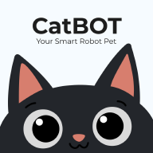

Memuat CatBOT...
Browser ini belum bisa terhubung ke robot (Bluetooth).
iPhone/iPad: buka halaman ini di aplikasi
Bluefy
(gratis di App Store). Android/laptop: pakai Google Chrome atau Microsoft Edge.
Mengerti